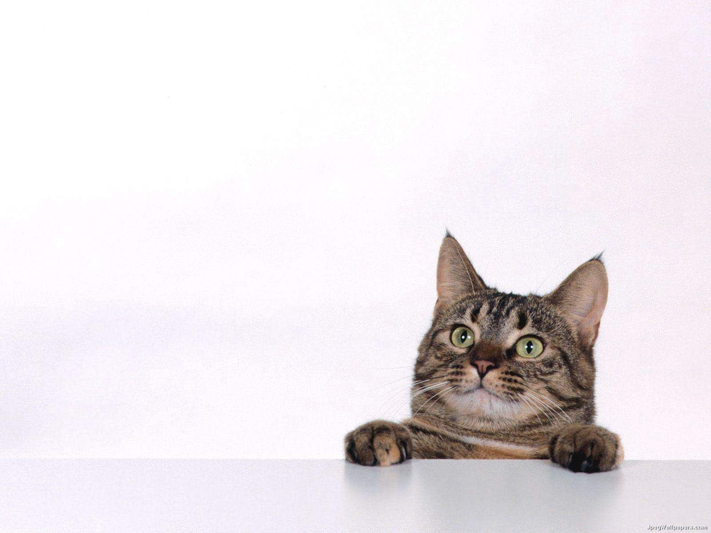
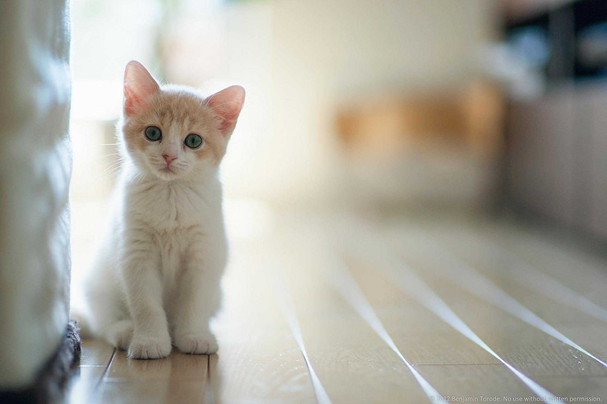
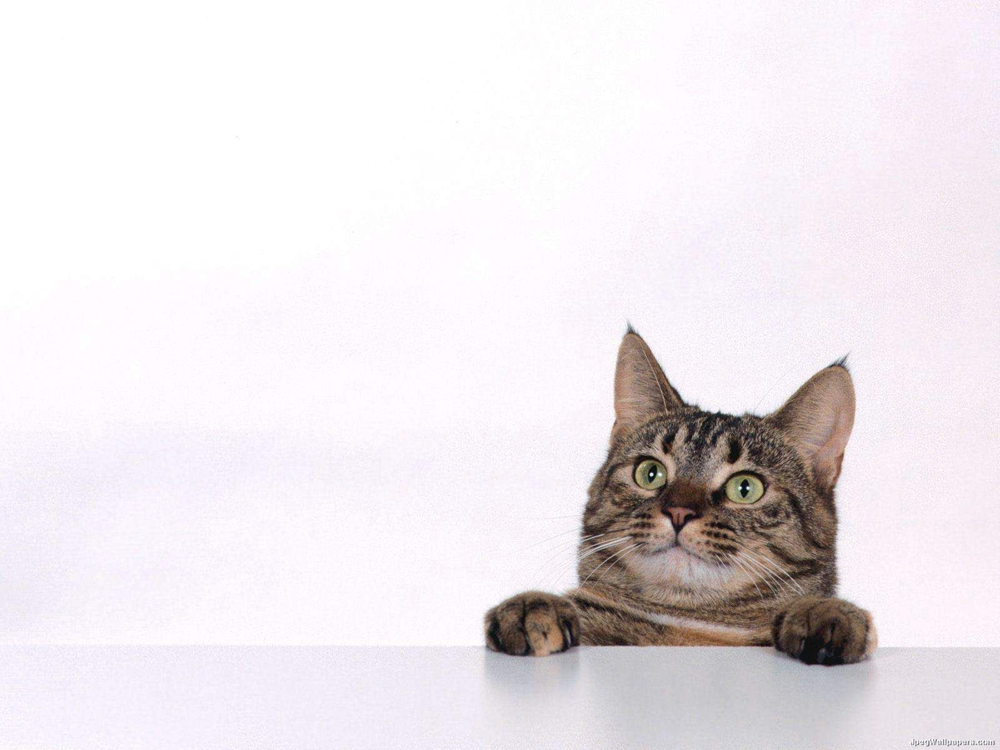
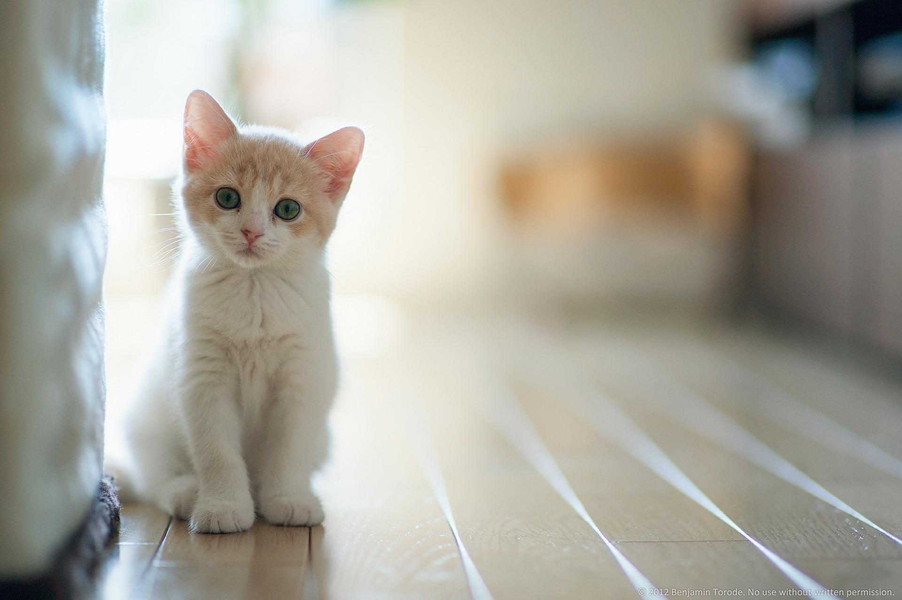
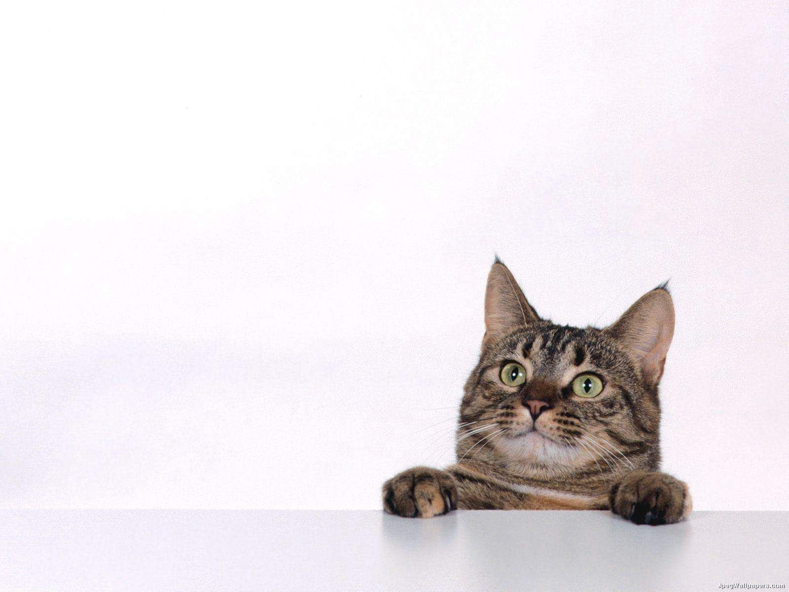
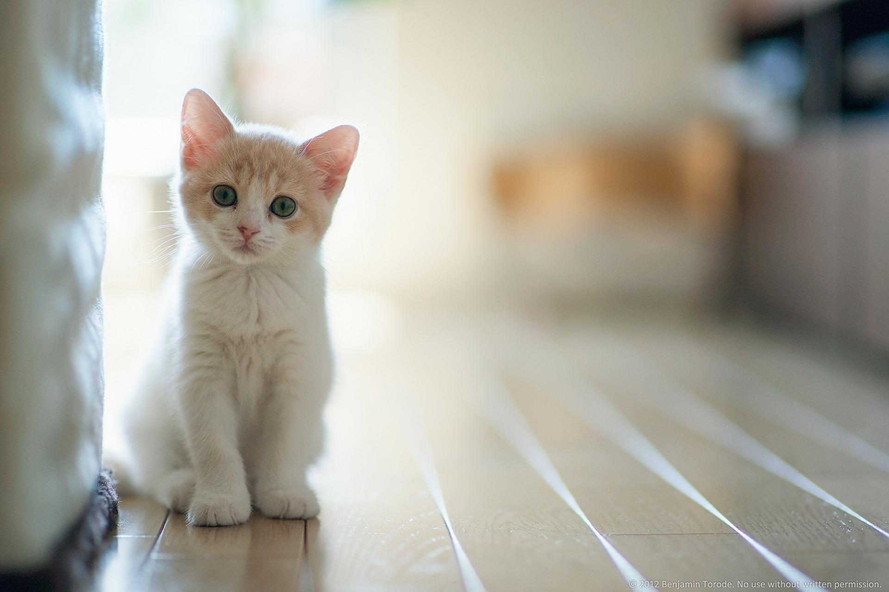

This article is about the species that is commonly kept as a pet. For the cat family, see Felidae. For other uses, see Cat (disambiguation) and Cats (disambiguation). Domestic cat Cat poster 1.jpg Various types of domestic cat Conservation status Domesticated Scientific classificationedit Kingdom: Animalia Phylum: Chordata Class: Mammalia Order: Carnivora Suborder: Feliformia Family: Felidae Subfamily: Felinae

Female domestic cats can have kittens from spring to late autumn, with litter sizes often ranging from two to five kittens.[9] Domestic cats are bred and shown at events as registered pedigreed cats, a hobby known as cat fancy. Population control of cats may be effected by spaying and neutering, but their proliferation and the abandonment of pets has resulted in large numbers of feral cats worldwide, contributing to the extinction of entire bird, mammal, and reptile species.[1